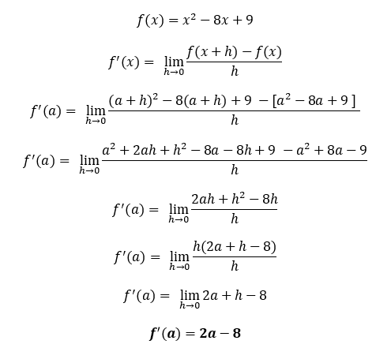
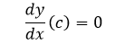
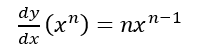
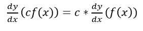
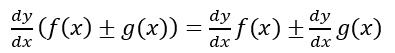
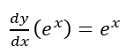
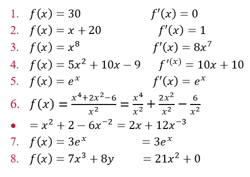

LA DERIVADA
En matemática, la derivada de una función es una medida de la rapidez con la que cambia el valor de dicha función matemática, según cambie el valor de su variable independiente. La derivada de una función es un concepto local, es decir, se calcula como el límite de la rapidez de cambio media de la función en un cierto intervalo, cuando el intervalo considerado para la variable independiente se torna cada vez más pequeño. Por ello se habla del valor de la derivada de una cierta función en un punto dado.
TEOREMA
La derivada de una función f en un número a, se denota con f’(a) es:

Si este límite existe.
EJEMPLO
Encuentre la derivada de la función en el número a:

Una función f es diferenciable en a si f’(a) existe. Es diferenciable en un intervalo abierto (a, b), si es diferenciable en todo número del intervalo.
Si f es diferenciable en a, entonces f es continua en a.
Si usamos la notación tradicional y = f(x) para indicar que la variable independiente es x y la variable dependiente es y, entonces algunas notaciones alternativas comunes para la derivada son:

Los símbolos D y d/dx se denominan operadores diferenciales porque indican la operación de derivación, que es el proceso de calcular una derivada.
¿Cómo deja de ser diferenciable una función? En general, si la gráfica de una función tiene esquinas o retorcimientos, la gráfica de f no tiene tangentes en esos puntos y f no es diferenciable allí. Al intentar calcular f’(a), encontramos que los límites por la izquierda y por la derecha son diferentes.
REGLAS DE DERIVACION
Derivada de una función constante

Derivada de una función potencias

Regla de la potencia

Múltiplo constante

Regla de la suma y resta

Función exponencial natural

EJEMPLOS:
Encuentre la derivada de las siguientes funciones:
